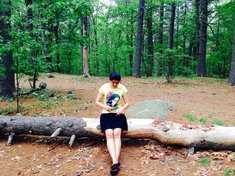
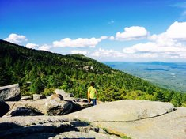

All trails
Spring and Summer 2015, I went to different hiking trials. I have added few to this page. More to come!!! In future this page will have all the trails links!! Page in under construction!!
Middlesex Fall Reservoir
The Middlesex Fells Reservation, more commonly known as The Fells, is located just seven miles north of Boston.
Monadock Mountain
Mt. Monadnock is the centerpiece of the 5,000 acre Monadnock State Park.
Halibut Point State Park
The best of the Massachusetts coastline! Beautiful view! Tide pools to explore! Huge boulders to walk on!
Breakheart Reservation
At 233 feet you are at the top of Breakheart Hil where you will have great views back towards the skyline of boston.
Walden Pond State Park
At 233 feet you are at the top of Breakheart Hil where you will have great views back towards the skyline of boston.
Wachusett Mountain
At 233 feet you are at the top of Breakheart Hil where you will have great views back towards the skyline of boston.
Purgatory Chasm Park
At 233 feet you are at the top of Breakheart Hil where you will have great views back towards the skyline of boston.
Quincy State Park
At 233 feet you are at the top of Breakheart Hil where you will have great views back towards the skyline of boston.